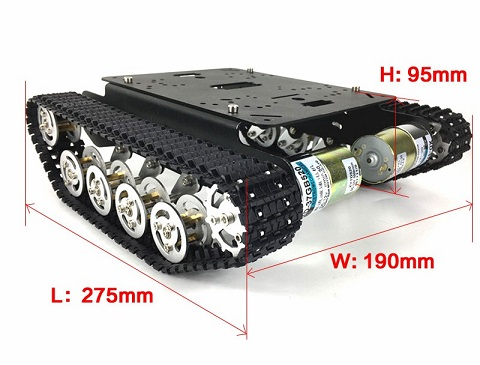

Гусеничное шасси для Arduino

Краткое описание товара
Материал: алюминиевый сплав
Колеса: алюминиевый сплав
Трек: инженерный пластик
Размер игрушки: около 275*190*95 мм (длина * ширина * высота)
Вес: 1100 г
Цвет: Золотой Желтый/Серебряный/черный
Параметры двигателя (25 мм 9 В двигатель постоянного тока)
- Наименование: 25 мм мотор
- Скорость вращения: 150±10% об/мин
- Ток без нагрузки: 200 мА (Max)
- Вольт-амперная характеристика
- Ток (max): 4500 mA
- Номинальный ток: 1200 мА (макс)
- Рабочее напряжение: 9 В
- Крутящий момент: 9,5 kgNaN
- Номинальная скорость: 100±10% об/мин
- Номинальный крутящий момент: 3000 gNaN
- Шум: 56 dB
- Внешняя длина вала: 14,5 мм
- Конец вала: 0,05-0,50 мм
- Винт Размеры: M3.0
- Диаметр D3.5
- Энкодер: 2 импульсов/круг
Lessons of Arduino
Все права защищены © 2018